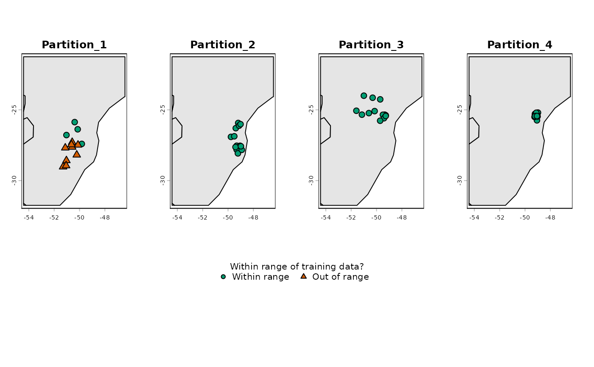
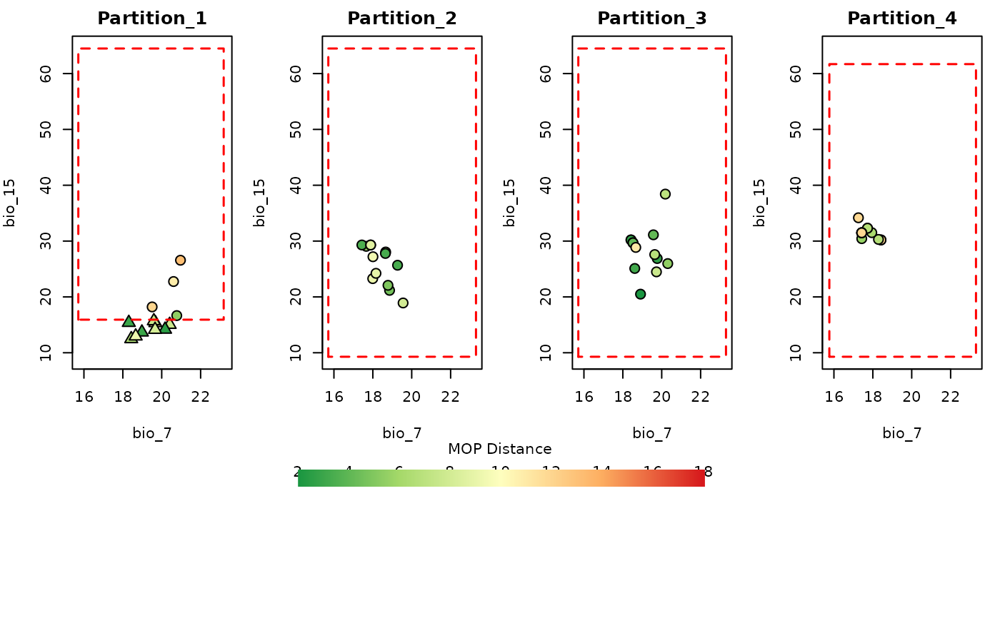
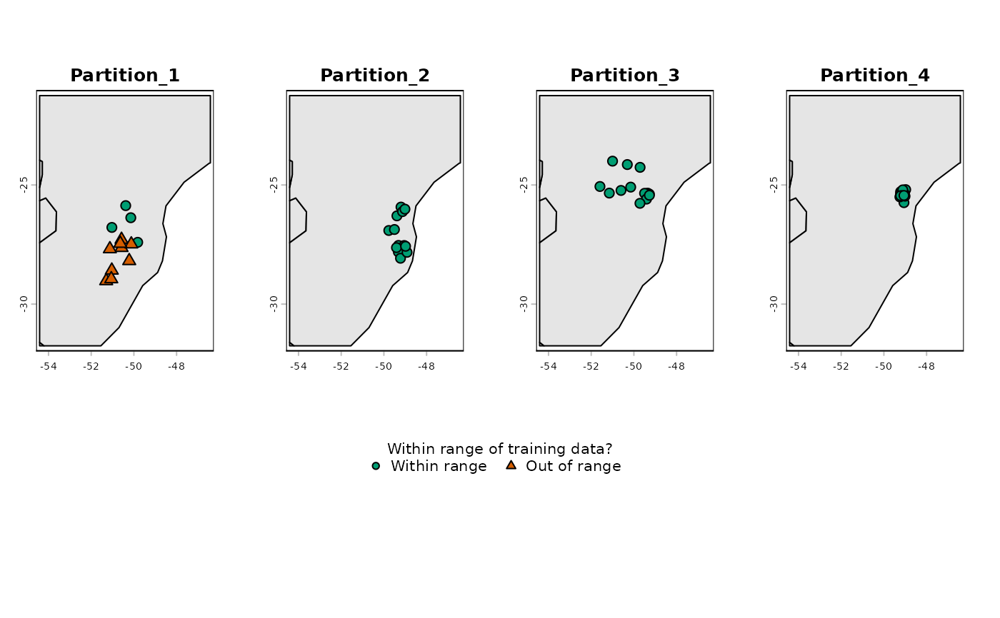
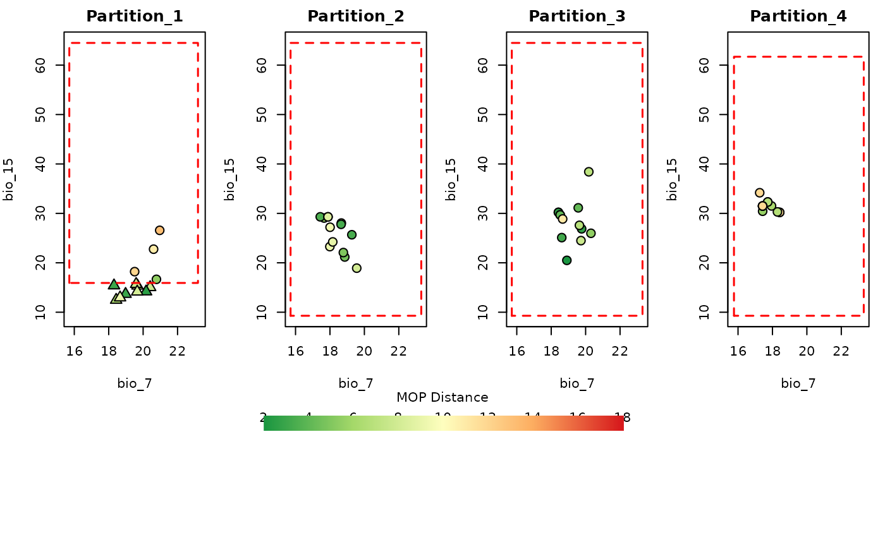

Plot extrapolation risks for partitions
Source:R/plot_explore_partition.R
plot_explore_partition.RdVisualize data from an explore_partition object generated with the
explore_partition_extrapolation function.
Usage
plot_explore_partition(
explore_partition,
space = c("G", "E"),
type_of_plot = c("distance", "simple"),
variables = NULL,
calibration_area = NULL,
show_limits = TRUE,
include_background = FALSE,
distance_palette = NULL,
break_type = "pretty",
in_range_color = "#009E73",
out_range_color = "#D55E00",
calibration_area_col = "gray90",
pr_alpha = 1,
bg_alpha = 0.4,
pch_in_range = 21,
pch_out_range = 24,
cex_plot = 1.4,
size_text_legend = 1,
legend.margin = 0.4,
lwd_legend = 12,
ncols = NULL,
...
)Arguments
- explore_partition
an object of class
explore_partitionreturned by theexplore_partition_extrapolation()function.- space
(character) vector specifying the space to plot. Available options are 'G' for geographical space and E' for environmental space. Default is c("G","E"), meaning both spaces are plotted.
- type_of_plot
(character) vector specifying the type(s) of plot. Options are "simple", which shows whether the record in a partition is within the range of the other partitions, and "distance", which shows the Euclidean distance of the record to the set of conditions in the other partitions. Default is c("simple", "distance"), meaning both plots are produced.
- variables
(character) A pair of variables used to define the axes of the environmental space. Default is NULL, meaning the first two continuous variables available in
explore_partitionare used to define the E space.- calibration_area
(SpatRaster, SpatVector, or SpatExtent) A spatial object representing the calibration area. Preferably, one of the raster layers used as variables to
prepare_data. Required only whentype_of_plot = "G". The default, NULL, uses a basic Spatvector of the world.- show_limits
(logical) whether to draw a box representing the lower and upper limits of the variables, considering the other partitions (i.e., in Partition 1, the box represents the limits considering Partitions 2, 3, and 4. Only applicable when "E" is included in
type_of_plot. Default is TRUE.- include_background
(logical) whether to plot background points together with presence records. Only applicable if
explore_partitionwas obtained using presence and background points (i.e., withinclude_test_background = TRUEinexplore_partition_extrapolation). Default is FALSE.- distance_palette
(character) a vector of valid colors used to interpolate a palette for representing distance. Default is NULL, meaning a built-in palette is used (green for lower distances and red for higher distances). Only applicable if "distance" is included in
type_of_plot.- break_type
(character) specifies the method used to define distance breaks. Options are "pretty" or "quantile". Default is "pretty", which uses the
pretty()function to set the breaks. Only applicable if "distance" is included intype_of_plot.- in_range_color
(character) a color used to represent records that fall within the range of the other partitions. Default is "#009E73" (Seafoam Green).
- out_range_color
(character) A color used to represent records that fall outside the range of the other partitions. Default is "#D55E00" (reddish-orange).
- calibration_area_col
(character) A color used to represent the calibration area. Default is "gray90".
- pr_alpha
(numeric) specifies the transparency of presence records. Default is 1, meaning fully opaque.
- bg_alpha
(numeric) specifies the transparency of background points. Default is 0.4. Only applicable if
include_backgroundis set to TRUE.- pch_in_range
(numeric) specifies the symbol used for points that fall within the range of the other partitions. Default is 21 (filled circle). See
?pchfor other available options.- pch_out_range
(numeric) specifies the symbol used for points that fall outside the range of the other partitions. Default is 24 (filled triangle). See
?pchfor other available options.- cex_plot
(numeric) specifies the size of points in the plot. Default is 1.4
- size_text_legend
(numeric) specifies the size of the text in the legend. Default is 1.
- legend.margin
(numeric) specifies the height of the row in the layout that contains the legend. Default is 0.4, meaning the row will be 40% the height of the other rows in the layout.
- lwd_legend
(numeric) specifies the width of the legend bar representing distance. Default is 12. Applicable only if "distance" is included in
type_of_plot.- ncols
(numeric) specifies the number of columns in the plot layout. Default is NULL, meaning the number of columns is determined automatically based on the number of partitions.
- ...
additional arguments passed to
plot().
Examples
# Load prepared_data with spatial blocks as the partitioning method (from ENMeval)
data(swd_spatial_block, package = "kuenm2")
# Analyze extrapolation risks across partitions
res <- explore_partition_extrapolation(data = swd_spatial_block,
include_test_background = TRUE)
# Plot partition distribution in Geographic Space (Distance and Simple MOP)
plot_explore_partition(explore_partition = res, space = "G",
variables = c("bio_7", "bio_15"))
 
# Plot partition distribution in Environmental Space (Distance and Simple MOP)
plot_explore_partition(explore_partition = res, space = "E",
variables = c("bio_7", "bio_15"))


# Plot partition distribution in Environmental Space (Distance and Simple MOP)
plot_explore_partition(explore_partition = res, space = "E",
variables = c("bio_7", "bio_15"))
